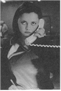
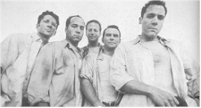
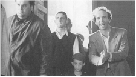

Contents | Features | Reviews | News | Archives | Store

Contents | Features | Reviews | News | Archives | Store
 |
23rd Toronto
International |
At this high point in its nearly quarter-century existence (well, OK, this was the 23rd year), there are a number of different Toronto International Film Festivals, all of which appeared to be running like clockwork throughout the 10-day 1998 edition (10-19 September).
There's the public festival, where faithful, knowledgeable movie fans (Toronto's full of 'em) line up for evening shows of high-profile films attended by stars and directors. The majority of those movies are screened throughout the day for press and industry attendees (who may also, if they're lucky, score tickets to the glitzy evening events on a first-come, first-served basis). And then there are the buyers and sellers, jockeying among each other for position in the lucrative but byzantine world of acquisition and distribution.
 Most visitors spend their time on one, or maybe two, of these tiers,
with the occasional foray into, or at least glimpse of, a parallel world adjacent to
theirs. Thus, someone in town managing acquisition for a distribution company and as a
result focusing on only a small number of potential acquisitions might be only vaguely
aware of the nonstop press roundtables between stars and junket-mad journalists at the
Four Seasons Hotel (why do movie companies always seem to junket in Four Seasons hotels?),
while a working journalist might spend at least as much time writing up notes as seeing
movies -- and be only vaguely aware of the commerce that has become a key component in
making Toronto probably the most important North American venue for buying and selling
movies in the film festival year and second only to Cannes in world importance. As a
corollary to that, a festival programmer in town to look for the latest Spanish-language
films, say, is limited in what else he or she can see, while the general programmer risks
being overwhelmed by the sheer number of world premieres on offer.
Most visitors spend their time on one, or maybe two, of these tiers,
with the occasional foray into, or at least glimpse of, a parallel world adjacent to
theirs. Thus, someone in town managing acquisition for a distribution company and as a
result focusing on only a small number of potential acquisitions might be only vaguely
aware of the nonstop press roundtables between stars and junket-mad journalists at the
Four Seasons Hotel (why do movie companies always seem to junket in Four Seasons hotels?),
while a working journalist might spend at least as much time writing up notes as seeing
movies -- and be only vaguely aware of the commerce that has become a key component in
making Toronto probably the most important North American venue for buying and selling
movies in the film festival year and second only to Cannes in world importance. As a
corollary to that, a festival programmer in town to look for the latest Spanish-language
films, say, is limited in what else he or she can see, while the general programmer risks
being overwhelmed by the sheer number of world premieres on offer.
The one true leveler for all attendees is the vigorous post-screening nightlife, where one is just as likely to stumble into a private pour for battle-hardened sales agents, an enclave of young stars freaked out by the attention but trying mightily to look cool at the city's trendiest bistro, or a quasi-neighborhood joint with nary an accreditation badge in sight (no matter which level you're on, these last are best for catching up with A-list colleagues -- especially if said joint has one or more pool tables).
Toronto vets were keeping a keen eye on this year's event for purely logistical reasons. After last year's transitional arrangements that found pockets of activity throughout the downtown, this year's festival was consolidated in the hotels and cinemas of the Bloor-Yorkville area, roughly at the intersection of Bloor and Yonge streets.
This proved to be successful, as -- a waning Air Canada strike that made Buffalo's airport look like a Cannes cocktail party and a paucity of Toronto hotel rooms aside -- the "Festival Village" concept worked wonders on everyone's stamina (not to mention cab and subway budgets) and sense of shared purpose. And while public screening sellouts are a happy Toronto tradition that benefit everyone (except, of course, those who can't get in), the shift of press and industry shows from larger houses to a centrally located multiplex and a few ancillary theaters provided just enough seats for delegates to fill the houses with the occasional comfortable, but apparently not unmanageable, overflow. Most of these astute changes came under the purview of first-year Managing Director Michèle Maheux, who lacked only the out-of-her control completion of the Grand Bay (formerly Park Plaza Hotel) to have just about every physical piece in place.
Maybe it only seemed as if Toronto was deluged with a flood of established and up-and-coming stars and filmmakers (who actually outnumbered the registered journalists, with one report placing the tally at about 800), but only a partial list of those spotted either in press conferences or pubs includes Tom Cruise (he produced Robert Towne's Steve Prefontaine biopic Without Limits), Rosanna Arquette (Hell's Kitchen N.Y.C.), Billy Bob Thornton (A Simple Plan), Donald Sutherland (Without Limits), the hard-working Janeane Garofalo (Dog Park, A Simple Plan, Permanent Midnight), Peter Berg (the "Chicago Hope" actor who makes his directorial debut with the much-ballyhooed Very Bad Things), Edward Furlong (John Waters' Pecker), Helena Bonham Carter (The Theory of Flight), Billy Zane (I Woke Up Early the Day I Died), Cameron Diaz (Very Bad Things), Brad Renfro (Apt Pupil) and Brian De Palma (who didn't have a film in the festival but was glimpsed in his bathrobe milling around outside the Radisson Plaza Hotel during a nocturnal fire drill).
On the business side of things, there were no deals generated by the 500 registered buyers and sellers to match the astonishing $6 million October Films paid for Robert Duvall's The Apostle at last year's festival, but hardly anybody expected one. What there was, was business: Paramount Classics made their very first company buy early in the game (Tod Williams' The Adventures of Sebastian Cole), while the brand new Independent Pictures imprint bought Dog Park, the directorial debut of former "Kids on the Hall" brat Bruce McCulloch. Another relative newcomer, Canadian-based Lions Gate Films, acquired two Canadian films: François Girard's overstuffed opening night attraction The Red Violin and Canadian film industry vet Don McKellar's end-of-the-world directorial debut Last Night.
Veteran player Fine Line bought Bernardo Bertolucci's made-for-Italian-TV The Siege, while The Samuel Goldwyn Company tapped Morgan J. Freeman's Desert Blue (his follow-up to the sadly mishandled Hurricane Streets). October Films nabbed Eric Rohmer's Tale of Autumn (the climactic film in the great director's most recent cycle) and also announced the purchase of Emir Kusturica's Black Cat, White Cat -- which had premiered only days before at the Venice festival but was absent from Toronto.
German director Tom Tykwer, whose Wintersleepers thrilled the festival circuit last year, saw his latest movie Run, Lola, Run land at Sony Pictures Classics. Roberto Benigni's Life is Beautiful was acquired by Miramax at Cannes, which may have explained the company's relatively low profile (so far, anyway). Other distribs, including Fox Searchlight Pictures, apparently sat this one out. Only time will tell if any of these acquisitions turn out to be as astute as October's (for sure, they were all cheaper).
 With
more than three hundred films from 53 countries showing in 13 separate and distinct
programs -- 114 making world or North American debuts; 83 first films -- navigating what's
onscreen in Toronto is a full-time endeavor involving skill, intuition and just plain
luck. There were, of course, the films everyone wanted to see, including such high-profile
(and some award-winning) fare as Todd Solondz' Happiness, John Boorman's The
General, Benigni's Life is Beautiful, Peter Chelsom's The Mighty, Bryan
Singer's Apt Pupil, the Bertolucci, Ken Loach's My Name is Joe (a
British-produced, Glasgow-set drama with such thick accents that one of the prints working
the festival had English subtitles), Stanley Tucci's Big Night follow-up The
Impostors, Marc Levin's Slam, closing night animated feature Antz, John
Waters' Pecker, Lance Mungia's Six-String Samurai,
Pat O'Connor's Dancing at Lughnasa and James Ivory's A Soldier's Daughter Never
Cries. Then there were the aforementioned acquisitions mentioned, movies that gained
heat as the festival progressed and juicy distribution deals seemed imminent.
With
more than three hundred films from 53 countries showing in 13 separate and distinct
programs -- 114 making world or North American debuts; 83 first films -- navigating what's
onscreen in Toronto is a full-time endeavor involving skill, intuition and just plain
luck. There were, of course, the films everyone wanted to see, including such high-profile
(and some award-winning) fare as Todd Solondz' Happiness, John Boorman's The
General, Benigni's Life is Beautiful, Peter Chelsom's The Mighty, Bryan
Singer's Apt Pupil, the Bertolucci, Ken Loach's My Name is Joe (a
British-produced, Glasgow-set drama with such thick accents that one of the prints working
the festival had English subtitles), Stanley Tucci's Big Night follow-up The
Impostors, Marc Levin's Slam, closing night animated feature Antz, John
Waters' Pecker, Lance Mungia's Six-String Samurai,
Pat O'Connor's Dancing at Lughnasa and James Ivory's A Soldier's Daughter Never
Cries. Then there were the aforementioned acquisitions mentioned, movies that gained
heat as the festival progressed and juicy distribution deals seemed imminent.
Which brings one to the other films, the movies that represent the best a country or movement has to offer but lack the necessary resources, muscle or interest to occupy the same rarified level as a new Shohei Imamura (Dr. Akagi), Bertolucci, Mohsen Makhmalbaf (The Silence), Rohmer, Angelopoulos or Boorman. And this may be the true test of festival director Piers Handling and his crack programming staff. It's one thing to assemble the hotly anticipated high-profile, mainstream films that will resonate in the marketplace for the next six to twelve months, but another thing entirely to devote large chunks of the program to current Canadian production, visiting filmmakers speaking with influential works from the length and breadth of film history, new trends in national filmmaking (this year it was Japan) and lesser-known international directors of note (in 1997 the subject was French auteur Benoît Jacquot, this year it was the breathtakingly simple but profoundly illuminating social observations of young Kazakh director Darezhan Omirbaev).
Shepherding the inquisitive cineaste/journalist through the volumes of material on these works -- the backbone, one might say, of what makes this festival really special -- were a team of publicists working from the press center who were available seemingly round the clock to answer the most mundane questions. By no means a complete list, this crew included Director of Communications Nuria Bronfman, Press Office Director Gabrielle Free, Co-Assistant Director Claire Moorsom, Senior Publicist Valerie Wint, and Publicists Marine Desmortiers, Frances Kushner, Eiko Mizuno, Jesmond Parke and Scott Tremaine.
Refreshingly, Toronto is a non-competitive festival, although that doesn't stop sponsors and other organizations from handing out a few prizes anyway. Major sponsor Air Canada's People's Choice Award went to Life is Beautiful, while Kirk Jones' Waking Ned Devine (which Fox Searchlight is distributing stateside) came in second in that balloting and the Berlin Golden Bear winner Central Station, from Brazil's Walter Salles (Sony Classics has that one in the U.S.), finished third. Robert Lepage's third feature, Nô, won the award for Best Canadian Feature, while the New Canadian Cinema Award for Best Canadian First Feature went to Last Night (both prizes are sponsored by local broadcaster CityTV). Mary Lewis' 23-minute short When Ponds Freeze Over won the National Film Board award, while sponsor Rothman's World Film gave their International Critics' award to two first-timers, Australian John Curran for Praise and Ziad Doueiri's Lebanese-French co-production West Beirut. The Metro Media Awards, bestowed by local press, went to Happiness (first place), Life is Beautiful (second place) and Central Station (third place).
Contents | Features | Reviews | News | Archives | Store
Copyright © 1999 by Nitrate Productions, Inc. All Rights Reserved.